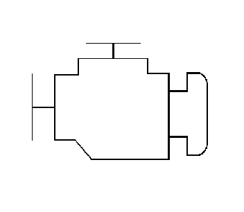
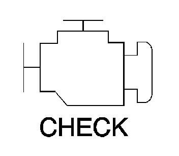

Engine Control Module: Description and Operation
Engine Control Module Description
The engine control module (ECM) interacts with many emission related components and systems, and monitors the emission related components and systems for deterioration. OBD II diagnostics monitor the system performance and a diagnostic trouble code (DTC) sets if the system performance degrades.
The malfunction indicator lamp (MIL) operation and the DTC storage are dictated by the DTC type. A DTC is ranked as a Type A or Type B if the DTC is emissions related. Type C is a non-emissions related DTC.
The ECM is in the engine compartment. The ECM is the control center of the engine controls system. The ECM controls the following components:
* The fuel injection system
* The ignition system
* The emission control systems
* The on-board diagnostics
* The A/C and fan systems
* The throttle actuation control (TAC) system
The ECM constantly monitors the information from various sensors and other inputs, and controls the systems that affect the vehicle performance and the emissions. The ECM also performs diagnostic tests on various parts of the system. The ECM can recognize operational problems and alert the driver via the MIL. When the ECM detects a malfunction, the ECM stores a DTC. The condition area is identified by the particular DTC that is set. This aids the technician in making repairs.
ECM Function
The engine control module (ECM) can supply 5 volts or 12 volts to the various sensors or switches. This is done through pull-up resistors to the regulated power supplies within the ECM. In some cases, even an ordinary shop voltmeter will not give an accurate reading because the resistance is too low. Therefore, a DMM with at least 10 megaohms input impedance is required in order to ensure accurate voltage readings.
The ECM controls the output circuits by controlling the ground or the power feed circuit through the transistors or a device called an output driver module.
EEPROM
The electronically erasable programmable read only memory (EEPROM) is a permanent memory that is physically part of the engine control module (ECM). The EEPROM contains program and calibration information that the ECM needs in order to control the powertrain operation.
Special equipment, as well as the correct program and calibration for the vehicle, are required in order to reprogram the ECM.
Data Link Connector (DLC)
The data link connector (DLC) is a 16-pin connector that provides the technician a means of accessing serial data for aid in the diagnosis. This connector allows the technician to use a scan tool in order to monitor the various serial data parameters, and display the DTC information. The DLC is located inside of the drivers compartment, underneath the dash.
Malfunction Indicator Lamp (MIL) Operation
The malfunction indicator lamp (MIL) is located in the instrument panel cluster. The MIL will display as either SERVICE ENGINE SOON or one of the following symbols when commanded ON:


The MIL indicates that an emissions related fault has occurred and vehicle service is required.
The following is a list of the modes of operation for the MIL:
* The MIL illuminates when the ignition is turned ON, with the engine OFF. This is a bulb test to ensure the MIL is able to illuminate.
* The MIL turns OFF after the engine is started if a diagnostic fault is not present.
* The MIL remains illuminated after the engine is started if the control module detects a fault. A diagnostic trouble code (DTC) is stored any time the control module illuminates the MIL due to an emissions related fault. The MIL turns OFF after three consecutive ignition cycles in which a Test Passed has been reported for the diagnostic test that originally caused the MIL to illuminate.
* The MIL flashes if the control module detects a misfire condition which could damage the catalytic converter.
* When the MIL is illuminated and the engine stalls, the MIL will remain illuminated as long as the ignition is ON.
* When the MIL is not illuminated and the engine stalls, the MIL will not illuminate until the ignition is cycled OFF and then ON.
ECM Service Precautions
The engine control module (ECM), by design, can withstand the normal current draws that are associated with the vehicle operations. However, care must be used in order to avoid overloading any of these circuits. When testing for opens or shorts, do not ground or apply voltage to any of the ECM circuits unless the diagnostic procedure instructs you to do so. These circuits should only be tested with a DMM.
Emissions Diagnosis For State I/M Programs
This OBD II equipped vehicle is designed to diagnose any conditions that could lead to excessive levels of the following emissions:
* Hydrocarbons (HC)
* Carbon monoxide (CO)
* Oxides of nitrogen (NOx)
* Evaporative emission (EVAP) system losses
Should this vehicles on-board diagnostic system (ECM) detect a condition that could result in excessive emissions, the ECM turns ON the malfunction indicator lamp (MIL) and stores a DTC that is associated with the condition.
Aftermarket (Add-On) Electrical And Vacuum Equipment
Notice: Do not attach add-on vacuum operated equipment to this vehicle. The use of add-on vacuum equipment may result in damage to vehicle components or systems.
Notice: Connect any add-on electrically operated equipment to the vehicle's electrical system at the battery (power and ground) in order to prevent damage to the vehicle.
Aftermarket, add-on, electrical and vacuum equipment is defined as any equipment installed on a vehicle after leaving the factory that connects to the vehicles electrical or vacuum systems. No allowances have been made in the vehicle design for this type of equipment.
Add-on electrical equipment, even when installed to these strict guidelines, may still cause the powertrain system to malfunction. This may also include equipment not connected to the vehicle electrical system, such as portable telephones and radios. Therefore, the first step in diagnosing any powertrain condition is to eliminate all of the aftermarket electrical equipment from the vehicle. After this is done, if the problem still exists, the problem may be diagnosed in the normal manner.
Electrostatic Discharge (ESD) Damage
Important: In order to prevent possible electrostatic discharge damage to the engine control module (ECM), DO NOT touch the connector pins on the ECM.
The electronic components that are used in the control systems are often designed to carry very low voltage. The electronic components are susceptible to damage caused by electrostatic discharge. Less than 100 volts of static electricity can cause damage to some electronic components.
There are several ways for a person to become statically charged. The most common methods of charging are by friction and by induction. An example of charging by friction is a person sliding across a car seat.
Charging by induction occurs when a person with well insulated shoes stands near a highly charged object and momentarily touches ground. Charges of the same polarity are drained off leaving the person highly charged with the opposite polarity. Static charges can cause damage, therefore, it is important to use care when handling and testing electronic components.
Emissions Control Information Label
The underhood Vehicle Emissions Control Information Label contains important emission specifications and setting procedures. In the upper left corner is the exhaust emission information. This identifies the year, the manufacturing division of the engine, the displacement of the engine in liters, the class of the vehicle, and type of fuel metering system. There is also an illustrated emission components and vacuum hose schematic.
This label is located in the engine compartment of every General Motors vehicle. If the label has been removed, it can be ordered from GM service parts operations (GMSPO).
Underhood Inspection
Important: This inspection is very important and must be done carefully and thoroughly.
Perform a careful underhood inspection when performing any diagnostic procedure or diagnosing the cause of an emission test failure. This can often lead to repairing a condition without further steps. Use the following guidelines when performing an inspection:
* Inspect all of the vacuum hoses for correct routing, pinches, cuts, or disconnects.
* Inspect any hoses that are difficult to see.
* Inspect all of the wires in the engine compartment for the following conditions:
- Burned or chafed spots
- Pinched wires
- Contact with sharp edges
- Contact with hot exhaust manifolds